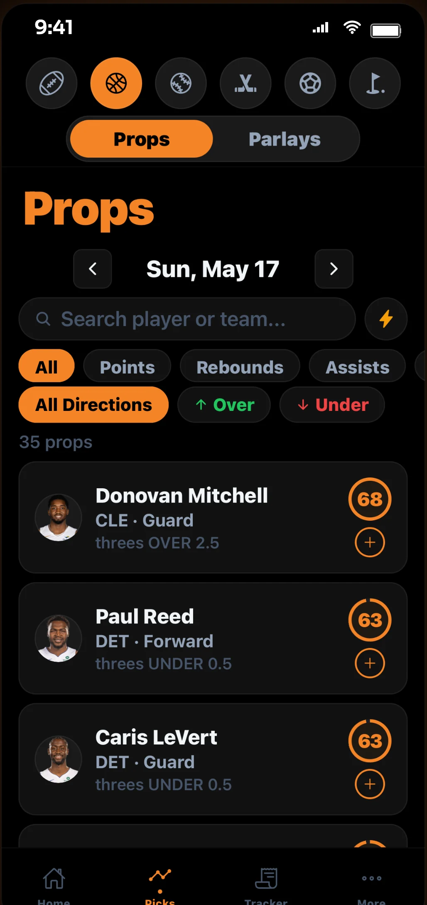
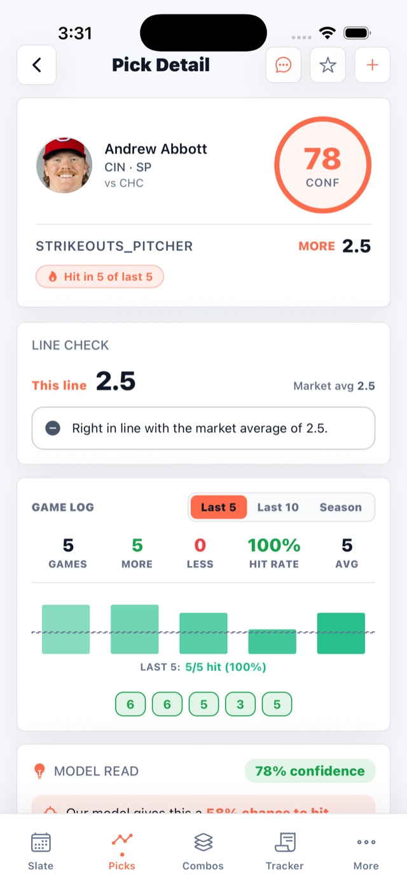
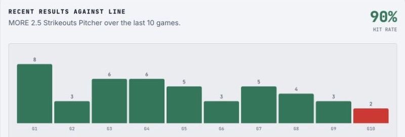

Look up any player prop.
Propeller Picks is an AI-assisted player prop research tool for DFS and pick'em players. Type a name to see what matters about the line, which way the research leans, and why, in plain English.
Works with ChatGPT, Claude and other AI tools that support MCP.
Try one: Patrick Mahomes Jalen Brunson Connor McDavid Nikola Jokic Bukayo Saka
Faster on your phone. Or explore Propeller free on the web. No card required.

What you get for each line.
- A lean, More or Less.Which way the research points for the line you're looking at.
- One Confidence Score.How strongly it leans, from 50 to 100. It is not a win chance or a guarantee. How the score works
- The reasons, in plain words.The matchup, his recent role, and where the line sits against his usual numbers.

See what your AI assistant gets
Connect Propeller to an AI tool and ask about a player in your own words. This is a real conversation Claude had through Propeller's MCP for a recent NFL slate. The time stamp shows when it ran, and every Propeller source it checked is listed.
On your phone or the web.
Save players and check a line before you lock your entry. When you want the whole slate, open the full workspace in your browser.
Use it on the web Free to start, no card. Full workspace $15 total a month, tax included. See pricing

Graded props behind the research.
Historical prop-analysis rows graded. They include repeated snapshots and retrospective data, so they show how deep the research goes. They are not unique customer bets or proof of future results. What that number means
Research only. Your pick.
We don't take bets.Propeller doesn't accept wagers or submit entries. Your pick happens on your own platform.
Built for pick'em.Use it next to PrizePicks, Underdog Fantasy and DraftKings Pick6. Propeller is independent and not affiliated with them.
Five sports.NFL, NBA, MLB, NHL and soccer, depending on the season and the day's slate.
Nothing to decode.No confusing betting jargon. If a word needs a glossary, we rewrite it. How it works
Fair questions.
Is Propeller a sportsbook?
No. Propeller is a research and analysis tool. We do not accept wagers or place bets for users.
What does the record include?
The public archive has two units: raw graded analysis rows and entries retained after the current API collapse rules. It includes repeated snapshots and legacy retrospective data, so it is not a uniquely published forward-test or ROI record.
Why desktop and mobile?
The desktop web app is built for deeper slate research. Mobile is for quick checks, saved props, alerts, and digest workflows when you are away from the desk.
Can I inspect Propeller's methodology and record?
Yes. Review the historical graded analysis rows, the separate First-observed capture, and how Propeller works. The current ledger does not independently verify event-start ordering or outcome timing. You can also read our AI research transparency benchmark.
—Waiting for eligible completed picks.00.00uRecord updates after eligible results settle.488K487,891 ledger entriesStatic API snapshot · October 27, 2026; live refresh enabled